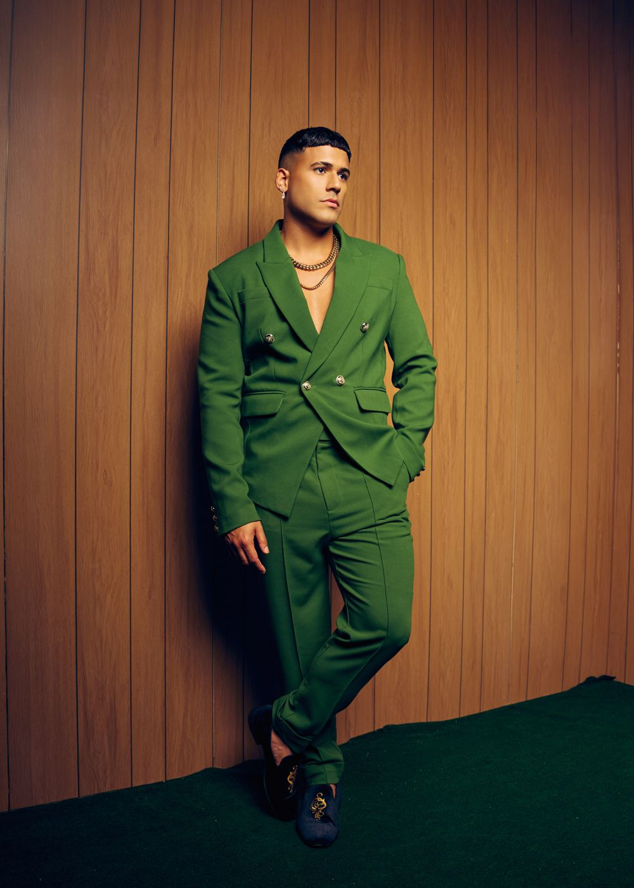
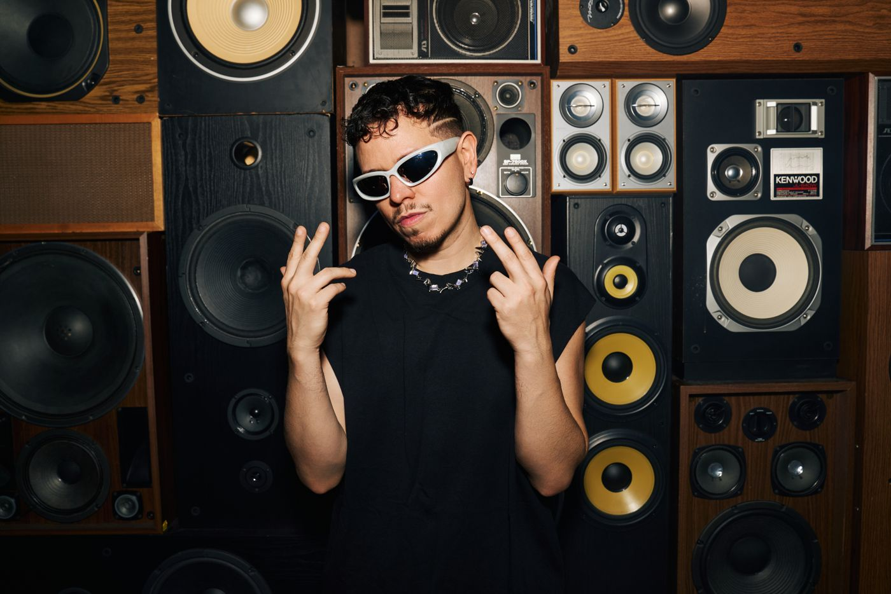
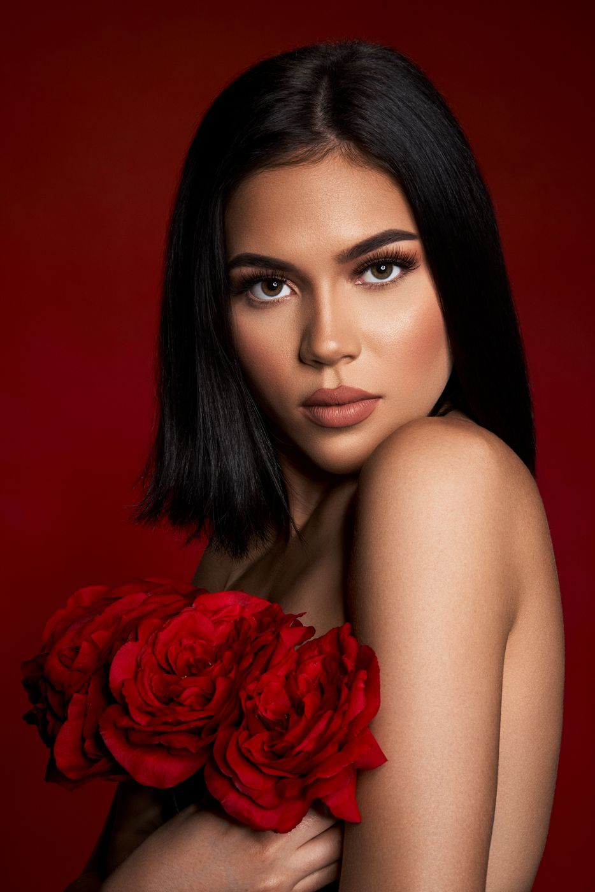
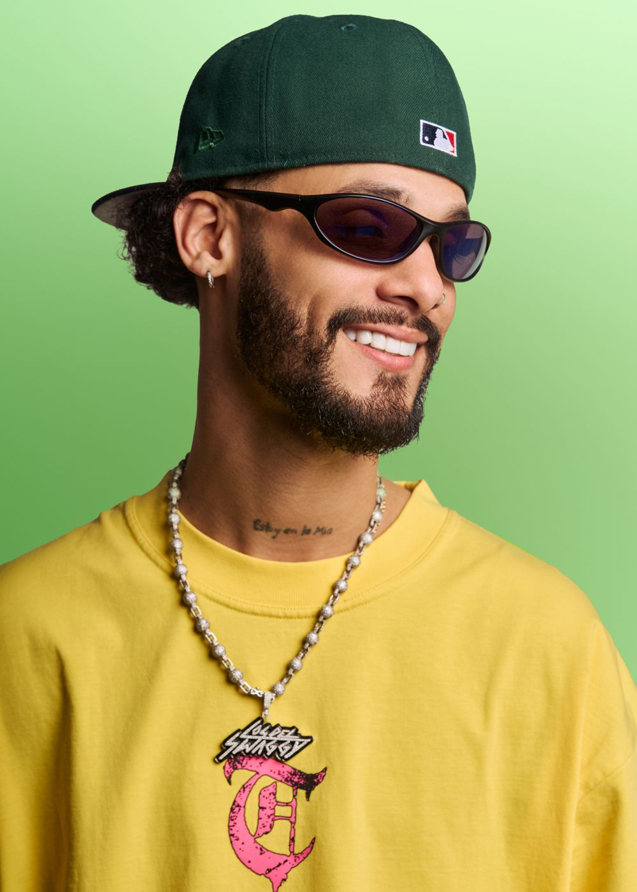
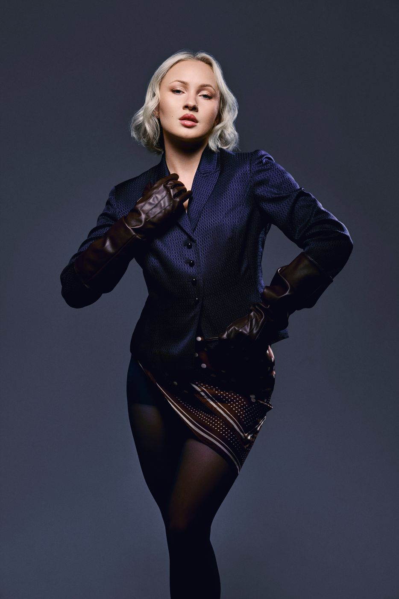
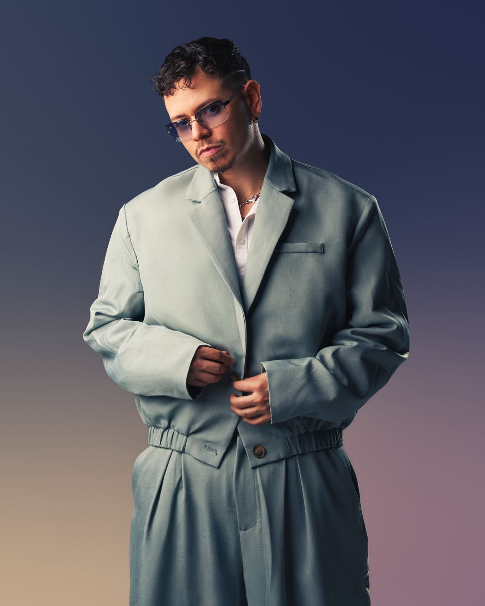
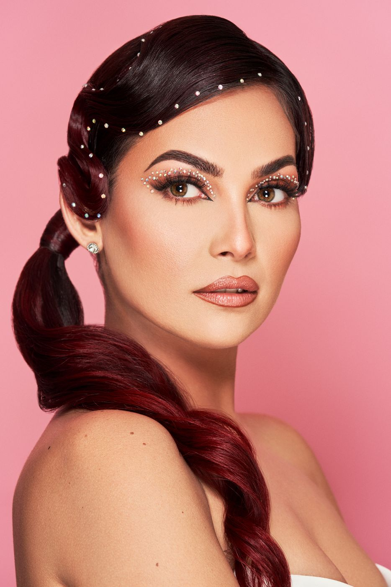

Medio día
- Hasta 5 horas en set
- Hasta 3 cambios de set o locación
- Portadas, sencillos y fotos de prensa
Fotógrafo para artistas · Orlando, FL
Fotógrafo para artistas en Orlando: portadas de álbum y sencillos, fotos de prensa y contenido para tu lanzamiento. Con créditos en portadas de Alex Rose y Anuel AA, y dirección creativa en español.

Tu lanzamiento
Un lanzamiento necesita más que la portada. Lo planeamos completo para que no te quedes sin contenido a mitad de la promoción.
La imagen del álbum o sencillo, pensada para verse bien en tamaño miniatura.
Para medios, playlists, flyers de shows y tu EPK.
Fotos y reels para anunciar la fecha en Instagram y TikTok.
El material que mantiene a tus fans pendientes después del estreno.
Trabajo con artistas


La elegida





Tarifas
La tarifa cubre la fotografía. Las fotos editadas se agregan por imagen, así solo pagas por las que vas a usar. Cada sesión se cotiza después de una llamada gratis.
Agrega a la producción
Un depósito del 50 % aparta tu fecha · el resto se paga el día de la sesión
Reseñas en Google · 5.0 ★
“Desde sesiones editoriales hasta conceptos en exteriores y dirección creativa, su versatilidad y su ojo para los detalles no tienen comparación.”
“GLPX Studio es, sin duda, el mejor fotógrafo de Orlando. Su ojo para los detalles, la luz y la forma de contar historias está a otro nivel.”
Reseñas originales en inglés, traducidas al español. Lee todas las reseñas en Google →
Preguntas frecuentes
Sí. He hecho portadas para Alex Rose (El Nuevo Rockstar y Oversized) y Anuel AA (Las Leyendas Nunca Mueren). Planeamos la idea, el vestuario y el set para que la portada funcione en Spotify, Apple Music y redes.
Lo ideal es varias semanas antes de la fecha, para tener la portada lista para el pre-save y contenido para anunciar el lanzamiento. Mándame la fecha y armamos el calendario desde ahí.
Tú eliges el tiempo: medio día (hasta 5 horas y 3 cambios de set) o día completo (hasta 10 horas y cambios ilimitados). Las fotos editadas se agregan por imagen, así que solo pagas por las que vas a usar.
Sí. Puedes agregar fotos detrás de cámaras, un reel de 30 a 60 segundos o un paquete de contenido con 2 reels y 15 fotos detrás de cámaras.
Claro. Puedes traer a tu estilista, maquillista o director creativo, o agregar los míos a la producción.
Siguiente paso
Mándame la fecha y la idea. Armamos la sesión alrededor de eso.